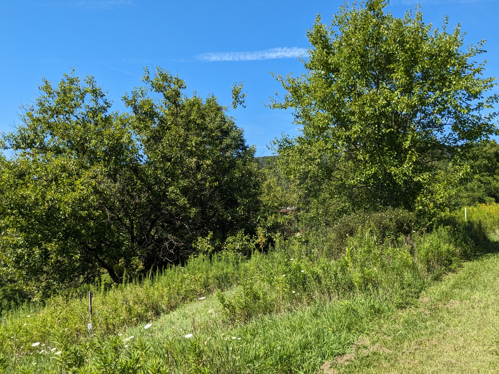

Concept
Mulberry Hill is a several acre area adjacent to a section of Riparian North to the West and the landscaped pinetum in the house's yard to the East. The area extends between the farm lane (South) and the Wet Meadow (North). It derives its name from its topography (a moderate up-slope) and the half-dozen Red Mulberry trees already growing there. Along with the Mulberries are several mast fruit including pear, species apple, American Plum, and numerous Gray Dogwood. This is an established feeding area for birds and other wildlife, and we aim to make it more so. Building on what is currently there, we plan to add a dozen or so each of Red Mulberries, Hazelnut, and Paw Paw.
Steps
- Select a site
- The segment of the wetland noted above, selected (complete)
- Record it
- Plan
- Species whose numbers could be increased
- Species whose numbes could be decreased
- Species not currently pesent whose introduction could be beneficial
- Plant Palettes
- Planting Map
- Implement
- Sequence of actions
- Resources needed not currently available
- Timeline
- Assess
- Narrative
- Data
- Notes